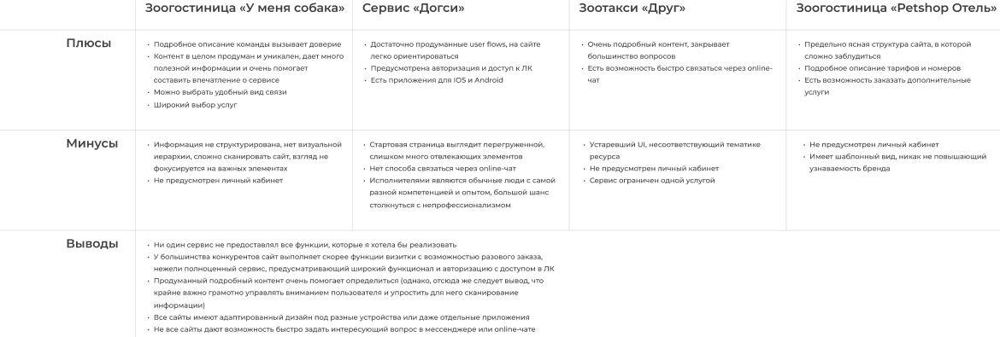

О проекте
Сервис помогает решать две самые наболевшие задачи в одном проверенном месте: качественный выгул и длительная передержка на время поездок. Дополнительной функцией является зоо-такси.
ЦА
Владельцы собак, содержащие их в городской среде. В основном это активные, работающие люди, для которых удобной и привычной практикой является делегировать различные задачи специальным сервисам и поиск таких сервисов в интернете.
Проблема
При огромном желании обеспечить любимому питомцу лучшие условия (в первую очередь регулярный качественный выгул) современные владельцы собак сталкиваются с острой нехваткой времени. Отдельной “головной болью” (особенно для крупных или “непростых” собак) является поиск комфортной передержки на время отъезда. А для людей, не имеющих личного транспорта (общественный может не подходить по множеству причин) очень остро стоит проблема перевозки животного, так как традицонные такси зачастую совсем не лояльны к питомцам.
Задача
Обеспечить надежный и удобный сервис для решения самых актуальных задач: выгул, длительная предержка и доставка из пункта А в пункт Б. Сервис должен сочетать простоту интерфейса и возможность настройки различных нюансов и дополнительных опций для каждого конкретного случая, подчеркивать отношение к питомцам, подговленность персонала и остальные конкурентные преимущества, а также иметь узнаваемый и дружелюбный визуальный дизайн.
Макет в Figma
Кликабельный прототип

Свой процесс я старалась строить, вдохновившись популярными методами “дизайн-мышления” и “двойного алмаза”, расширяя и фокусируя свой взгляд на задачу в рамках задач каждого этапа.
ЭТАП #1
Анализ конкурентов, интервью, инсайты
Для начала я провела анализ конкурентов и примерно определилась, что я хотела бы видеть в своем сервисе.

А для того, что бы лучше исследовать потребности пользователей и проверить некоторые гипотезы я провела несколько интервью.
Одна из гипотезах, заключающая в том, что неплохо было бы добавить также разделы с ветеринарными услугами и
грумингом потерпела разгром :) 6 из 8 респондентов сказали, что имеют надежного грумера и тем более ветеринара и не станут экспериментировать в этом вопросе.
Было принято решение осторожно оставить эти услуги в виде свернутых аккордеон-карточек с доп. опциями в форме заказа, не акцентируя на них внимание и
позволяя сервису выстраивать прочную ассоциацию с тремя четкими направлениями: гостиница, выгул, такси.
ЭТАП #2
Персоны, User Story, АИ
Затем на основе полученных данных я создала 2 собирательных образа персон (не слишком много, что бы не плодить лишних ограничений) и сформулировала user story от их лица, из которых выстроила USM.

Далее я определилась с информационной архитектурой, создав карту сайта. Она получилась довольно простой и “плоской”, основанной на трех основных категориях услуг.

ЭТАП #3
Вайрфрейминг, прототипы, тесты
Я набросала основную структуру с помощью вайрфреймов и сделала быстрые прототипы основных flows в Figma, что бы протестировать свои идеи. Больше всего меня беспокоил процесс оформления заказа, в том числе в авторизованном состоянии и без входа в ЛК.
В сценарных тестах с пользователями на прототипах я обращала внимание на несколько вещей: справится ли человек с моей задачей в принципе, как много времени это займет и на его поведение в целом (каким путем он двигается по интерфейсу, куда нажимает в первую очередь, выглядит ли растерянным и т.д.). После теста я просила ответить на несколько дополнительных вопросов, что бы собрать еще немного количественных данных.
Результаты показали, что в основном пользователи легко ориентировались в интерфейсе и находили нужную информацию довольно быстро.
Однако, опираясь на обратную связь, я все-таки внесла несколько важных корректировок:
- я добавила возможность почти такой же тонкой настройки опций при заказе без авторизации;
- отказалась от чек боксов в форме заказа, которые выглядели ненадежно и заставляли некоторых пользователей щелкать их несколько раз, что бы убедиться, что они добавили нужную функцию и не добавили ненужную :) - заменила их на тоглы;
- добавила блок с предпросмотром ключевых параметров заказа, динамически меняющийся при изменении этих параметров в форме (что также решает предыдущую проблему наверняка);
- добавила окно-подтверждение о том, что заказ принят и в течении определенного времени следует ожидать звонка сотрудника для утонения данных.
ЭТАП #4
Визуальный стиль, UI-kit, адаптивы
Я не проектировала отдельное приложение, хотя считаю это потенциально целесообразным для подобного сервиса. Вместо этого я адаптировала сайт к основным девайсам.


ЭТАП #5
ЛК и процесс оформления заказа
Так как я решила двигаться в сторону развития продукта, как дружелюбного помощника в вопросе делегирования задач, связанных с уходом за собаками, то я хотела добиться максимально гладкого пользовательского пути в процессе оформления заказа. Важны было сделать понятно, удобно и учесть вариативность опций.

Расширенный функционал доступен при авторизации. В ЛК пользователи могут видеть историю заказов, быстро создавать новые заказы путем копирования старых и конечно же заполнить свой профиль информацией, которая будет затем подтягиваться автоматически в случае необходимости.

ЭТАП #6
Выводы
1. В моих интервью звучало слишком много вопросов из серии “как мог бы выглядеть сервис вашей мечты”, в которых предлагалось делать предположения. Изучив больше материалов на эту тему я понимаю, что акцент стоило делать на существующем опыте и прошлых решениях.
2. Зато тематические чаты в телеграм оказались отличным местом для размещения опросов и поиска лояльных респондентов :)
3. Возможно я не уделила достаточно внимания поиску визуальной концепции. В целом эта часть стала для меня некоторым испытанием, так как продумывать пользовательские пути, взвешивать необходимость отдельных функций, планировать интервью или сводить таблицы в какой-то момент увлекло меня сильнее, чем выбор цвета кнопки или попытки сделать дизайн более современным и актуальным. В следующем проекте я бы взялась за этот момент более основательно.
4. Нужно больше доверять процессу и концентрироваться на маленьких шагах, вместо того, что бы прыгать между этапами в попытках охватить как можно больше задач и быстрее получить осязаемый результат.
5. Я до сих пор не уверена в том, где кончается моя компетенция как дизайнера и не слишком ли я погружалась в исследование CX.